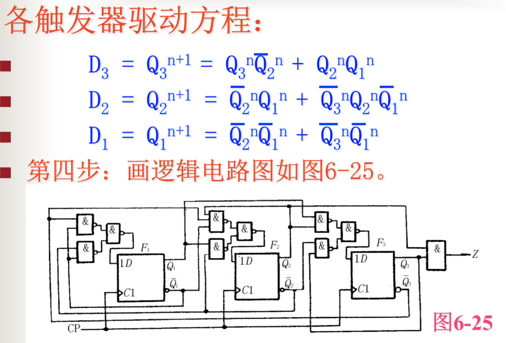

数字电路第六章：同步时序逻辑电路——下
状态编码
在求得最简状态码之后，需要对状态表中用字母或数字表示的状态用一组二进制代码来代替，称之为状态编码（也叫状态赋值或状态分配）
状态编码的任务
- 确定状态编码的长度，即二进制代码的位数或者是触发器的个数。
- 确定二进制编码的分配方案。
状态编码的长度确定
每个触发器可以代表一位二进制数，n个触发器可以代表n位二进制数，组成2n个二进制代码。
所需状态数M和触发器个数n之间应满足以下关系: 2n-1 < M ≤ 2n
确定二进制编码分配方案
因为编码和状态配合的方式很多，徐阿哟选择最佳的编码方式。
若当N=4, n=2时，就有24种状态分配方案。随着状 态数目的增加，状态分配方案的总数将急剧增加。状态编码解决的主要问题是确定一组使次态函数(或驱动方程)和输出函数尽可能简单、可靠的 状态编码,称之为最佳编码。
分配的基本原则
- 在状态表中同一输入下的相同次态所对应的现态，尽可能分配相邻编码。通常称为“次态相同，现态编码相邻”。
- 在状态表中，同一现态，相邻输入下的不同次态，应尽可能分配相邻编码。通常称为“同一现态，次态编码相邻”。
- 在状态表中某些输出完全相同的现态。那么尽可能给现态分配相邻的编码，通常称“输出相同，现态编码相邻”。
- 在状态表中，出现次数最多的状态通常给予逻辑0的编码。
注意：一般情况下，应优先考虑原则(1)，因为原则 (1)最重要！例：
结果如下：
同步时序逻辑电路设计举例
例题一
例题：试设计一个序列数据检测器，该电路用来检测输入的串行二进制序列，当输入连续出现110时，检测器输出为1，其他情况下输出为0。
- 进行逻辑抽象画出状态转换图和状态转换表
- 进行状态化简，因为全部确定，建立最简等效类
- 状态编码，状态可用两个二进制编码表示，S0出现的最多设为00，S1=01，S2=11
- 根据状态表求出状态方程，驱动方程和输出方程，画出Z的卡诺图，Q2n+1和Q1n+1的卡诺图
- 经过对比特征方程的标准形式，写出j和k，并画出逻辑电路图。
- 判断自启动，当电路处于无关状态时，是否可以通过时钟脉冲的作用下进入有效状态。
例题二
例题：试设计一个同步七进制计数器，要求按二进制加计数规律变化。
确定状态转换情况，注意看题是七进制，因此111位无效情况。
确定编码状态
因为是Moore型电路，跟输入无关，所以卡诺图这么画
通过卡诺图写出状态方程，经验来看Moore型电路都用D触发器
写出驱动方程，画出电路图

最后检查一下自启动
常用集成时序逻辑电路及应用
寄存器好像不考，直接计数器了。
计数器
一种对输入脉冲信号进行计数的时序逻辑部件。
可以分为：
- 二进制计数器和非二进制计数器
- 加计数器、减计数器和可逆计数器
- 同步计数器和异步计数器
集成计数器
同步集成计数器74LS191
74LS191
功能及其真值表
异步集成计数器74LS290
74LS290重点！
中规模集成电路74LS290是典型的异步BCD码十进制计数器。
逻辑电路如下
功能分析
- 若在CPa端输入时钟脉冲，则Qa输出信号是CPa的脉冲二分频
- FB,FC,FD三个触发器构成的逻辑电路是一个异步五进制计数器，其CPB为计数脉冲输入端，QD为输出端。即QD的输出信号是CPB脉冲的五分频。
- 若将CPB与QA相连，同时以CPA为输入计数脉冲端。QD的输出为十进制计数器(或十分频器)。
因此，又将这个电路称为二、五、十进制异步计数器。
真值表
真值表的分析 - 直接复位输入端R01和R02：当R01=R02=1，且S91,S92中有“0”时，可使各触发器清为零。
- 置“9”输入端S91和S92：其状态QDQCQBQA = 1001,这就是置“9”功能。
- 在置“9”输入端S91,S92和复位输入端R01,R02中均有“0”电平时，74LS290可实现计数功能。
任意进制计数器的构造方法
例：用74LS290和适当的门电路构成64进制计数器，采用5421BCD码计数。
- Cb和Qa接时，Ca输入时钟信号，输出顺序为dcba，计数方式为8421
- Ca和Qd接时，Cb接时钟信号，输出顺序为adcb，计数方式为5421
环形计数器
环形计数器是将移位寄存器的最后一级输出 反馈到第一级串行输入端SR，特点是构成的 计数器模数M和所用触发器个数n相等。